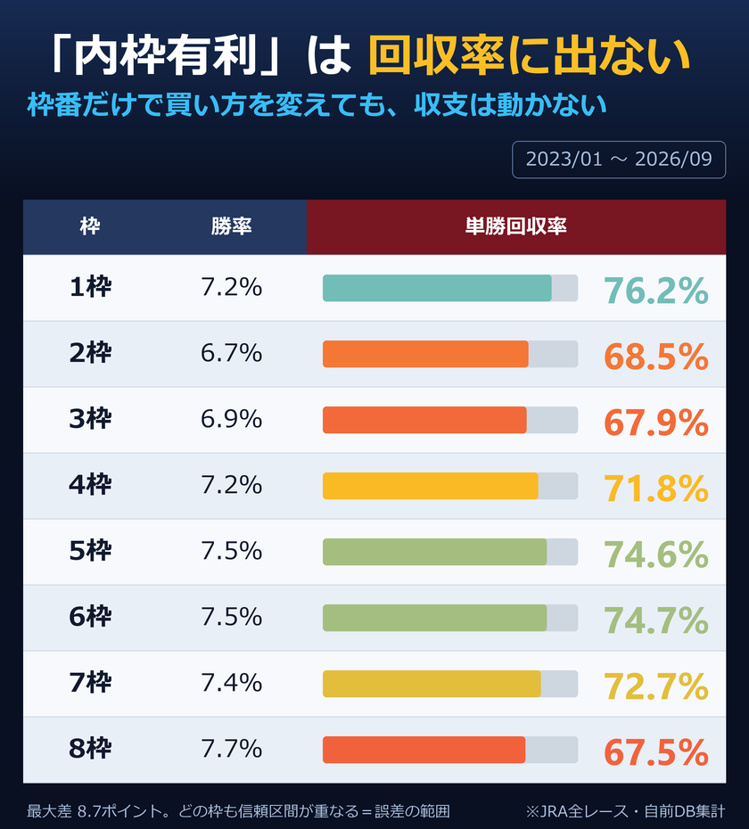

内枠が有利、というのは競馬でいちばんよく聞く話のひとつです。単勝回収率で見るかぎり、そこに差はありませんでした。

勝率は1枠7.2%から8枠7.7%まで、ほとんど横並びです。回収率も最大で8.7ポイントしか違わず、どの枠も95%信頼区間が互いに重なります。つまり枠番の違いは、偶然の揺れと区別がつきません。
これは「内枠が有利ではない」という意味ではありません。有利なら、その有利さはすでにオッズに織り込まれている、という意味です。みんなが知っている情報は、値段に入っています。
枠順が発表されてから馬券を買い直すかどうか迷ったときは、枠番そのものではなく、その枠だとこの馬の走り方が変わるか、を考えたほうが実りがあります。